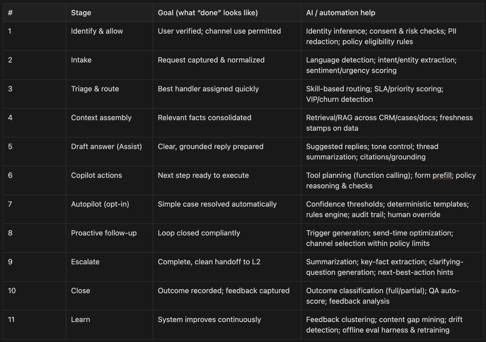
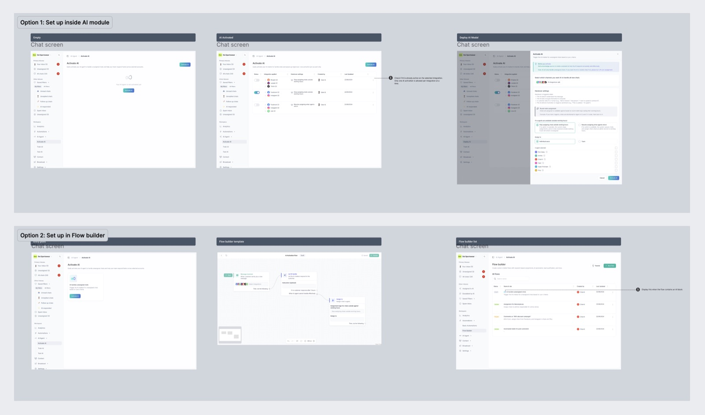
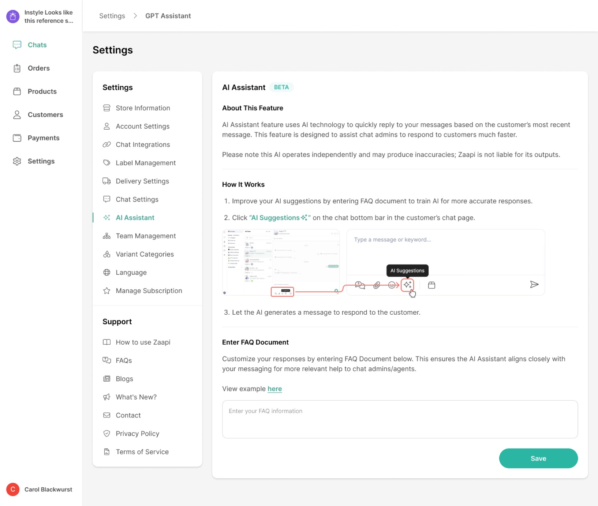
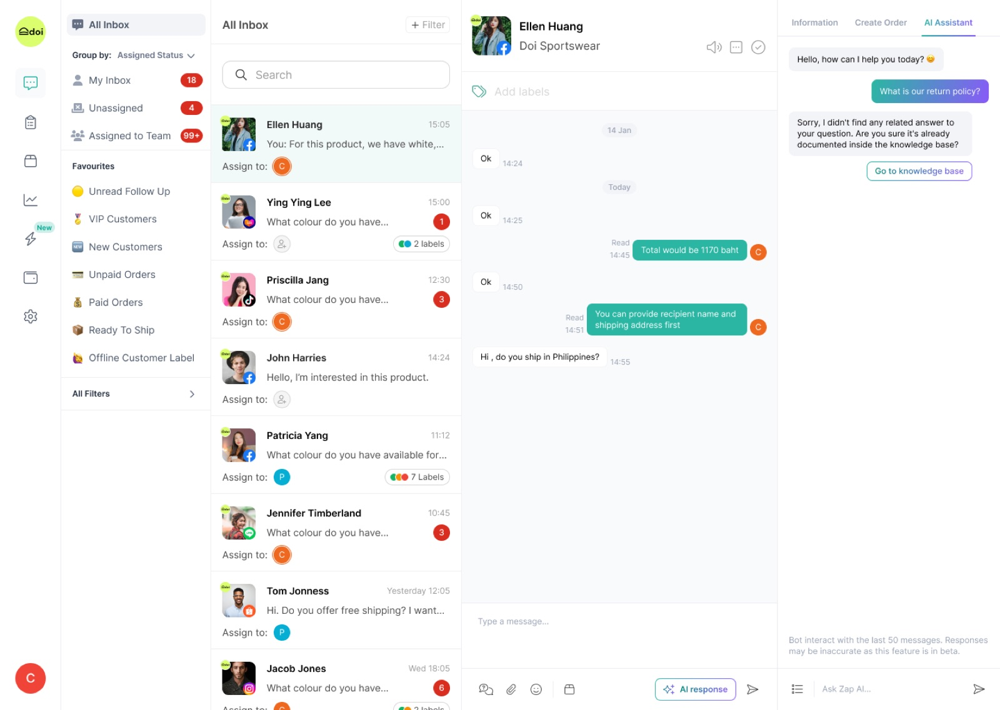
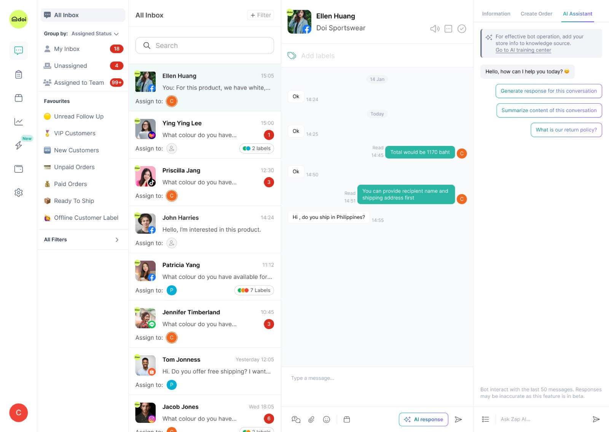
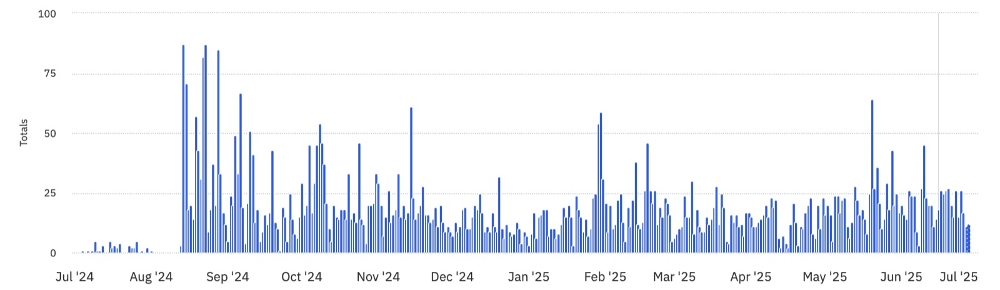
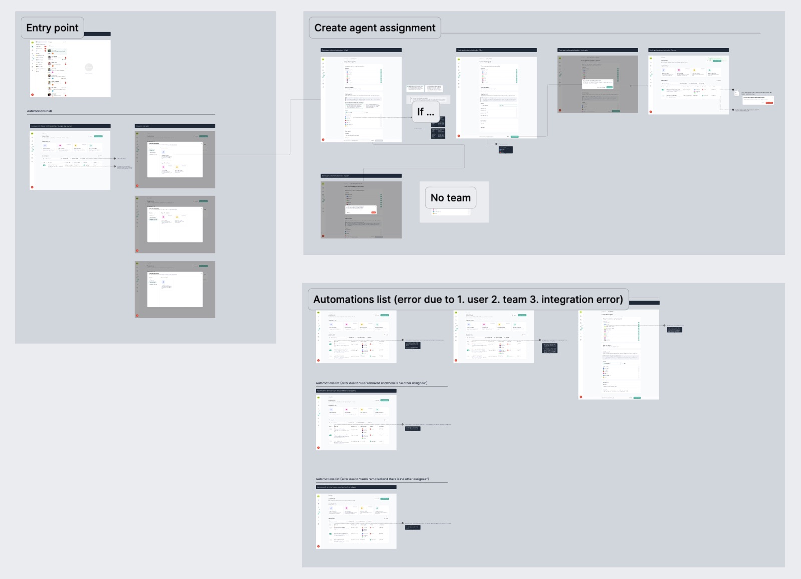

Designed a no-code AI chat agent and conversational UX that uses customer context before answering, cites sources, follows policy, stays human-controlled, and speaks in the brand voice — delivering faster resolutions and scaled support without new hires.
+750%
More AI feature usage (click) after introducing the new AI branding and relocating the button
+100%
Increase in messages sent by Zaapi AI from start of Q1 to end of Q2 2025 after launching AI thinking and performance dashboard
#1
AI became the most revenue-generating feature in the product (Sep '23 – Jan '25)
Role
Product Design Lead
Company
Zaapi
Timeline
Sep '23 – Q2 '25
Feature
AI Agent
Process
Lean — validate in production
Executive Summary
The Situation
ChatGPT's public launch in November 2022 reset what e-commerce sellers expected from support almost overnight. Zaapi's customers were already running customer service across Shopee, Lazada, TikTok Shop, LINE, Facebook, and Instagram at once — with human agents handling around 7,000 messages a month each.
The Problem
Scaling support meant hiring — roughly $600 per agent per month, or $21,000 a month for a 35-agent-equivalent team. An LLM could absorb that load, but without guardrails it hallucinates, breaks policy, and erodes the trust a brand's support depends on. And the managers who'd have to switch it on had neither the time nor the know-how to train and deploy AI themselves.
Timeline & Team
Sep '23 (AI 1.0 beta) – Q2 '25 · Sole product designer, promoted Senior → Lead along the way, partnering with the Head of Product, a 5-engineer tech team, and data · [Did the junior designer you later hired work on the AI agent? If so, what did they own?]
My Contribution
Led the AI agent's design from a draft-only beta to an agent teams could train, test, deploy, and measure — in-production experiments, intent mapping, interviews with managers running AI agents, the reasoning-transparency UX, the performance dashboard, and handover.
The Result
+750% AI feature usage from a single discoverability change, +100% more messages sent by the AI in one half-year after AI thinking and the performance dashboard shipped — and AI became Zaapi's most revenue-generating feature.
Context
The ChatGPT moment reset expectations overnight
Once ChatGPT went public, "reply as soon as possible" stopped being a nice-to-have. E-commerce sellers wanted faster, reliable support without losing the human touch — while their agents were already at around 7,000 messages a month each, a workload heading straight for burnout. Hiring out of it didn't scale either: at ~$600 per agent per month, a 35-agent-equivalent team costs $21,000 a month, and Zaapi was about to expand into Malaysia, Singapore, and the Philippines, where support had to grow without headcount growing in lockstep.
Zaapi had seen the trend coming — engineering was prototyping AI features with design before tools like ChatGPT were in everyday use. So the question was never whether to ship AI. It was how to make an unreliable new technology trustworthy enough that a brand would let it talk to its own customers.
Problem
Three groups, one trust problem
Teams handle high chat volume across fragmented systems. Before replying, an agent has to hunt for context — who the customer is, what just happened, where the case stands — which slows responses and makes answers inconsistent. LLMs can close that gap, but without guardrails they risk inaccuracy, policy violations, or slow replies. Each group felt that risk differently.
Customer Service Manager
Pain points
Onboarding and training new joiners doesn't scale
Inconsistent tone from one brand across many agents
Fear of AI that's robotic, inaccurate, or uncontrollable
No time or know-how to train and deploy AI
Chat Agent
Pain points
Constant tab-switching to gather basic context
Rewriting similar replies, unsure of tone or policy
Fear of giving wrong info — no visibility into source or freshness
Hitting platform limits, like message caps, without guidance
End Customer
Pain points
Needs instant support
Responses that aren't actually helpful
Unclear next steps and low confidence in the answer
My Role
What I owned, end to end
This project ran the opposite way from a textbook design process: engineering could already prototype the AI capability, so my job was to turn a capability into something customer service teams would trust enough to switch on — and then prove, with numbers, that they did. As Zaapi's only product designer (Senior, promoted to Product Design Lead partway through), I owned the in-production experiments, workflow and intent mapping, the interviews with managers overseeing AI agents, the KPI definitions we tracked success against, the interaction model for how the AI shows its reasoning, the testing environment, the performance dashboard, and the handover engineering built from. I partnered with the Head of Product, a five-engineer tech team, and data — meeting weekly on one shared set of numbers — running a one-week design cadence alongside engineering's two-week sprints. [Who drove the AI roadmap day to day — you, the Head of Product, or the engineers prototyping it? Which calls were explicitly yours vs. shared?]
Design Process
Validate in production, not in a lab
We skipped a traditional discovery phase on purpose. Because we'd anticipated the AI trend and already had working prototypes, the design process kicked in afterward — focused on solution validation through real usage rather than problem discovery. That meant four methods, each picked for a specific question:
Solution validation in production — released a lightweight MVP (answer suggestions), learned from real usage, then ran quick A/B-style tweaks on naming and placement.
Workflow mapping — AI capabilities mapped against every stage of the customer service workflow, used to align roadmap, ownership, and metrics.
Targeted interviews — exploratory and solution-validation interviews after launch, with managers overseeing AI agents and experienced AI users.
KPI and quality definition — workshops inside those interviews to agree how to track full vs. partial resolution, agent time saved, and AI vs. human handling volume.

Customer service workflow × AI capabilities
Intent mapping with power users
To decide what the AI should handle first, I asked top agents and owners which requests they handled most, reviewed a sample of their recent chats together, and ran intent detection on chat histories from our highest-usage accounts — then validated the ranked list back with those same power users. For a large multi-brand CS team, order status alone was 40% of chats (with cancellations needing empathy), order problems and invoice requests 10%, product questions 10%, and other order requests 10%. A supplement store's top jobs were checking order and delivery status — and answering medical-condition questions accurately and responsibly, which set a clear bar for grounding and policy.
What managers told us they needed
Quality they could audit — QA teams were manually reviewing AI replies for empathy and accuracy. They wanted the AI's decision process and source data visible on every response.
A training loop, not a one-time setup — clear templates and data-format guidance, plus one place to see escalations with suggestions for filling content gaps.
AI as the first line of defense — escalating only when needed, so it actually lowers staffing needs.
Numbers they could report upward — full vs. partial resolution, agent time saved, and AI vs. human chat volume, filterable by channel and account — plus a precise definition of when a chat counts as "closed by AI."
Cases tagged by intent — to track daily volume and see which conversations the AI couldn't resolve because of missing data or training.

Solution validation — AI agent setup, two options
Defining success up front
The north star was messages sent by AI — it tracks directly to revenue — alongside AI full-resolution rate. Around it: quality and trust (fewer escalations to humans, fewer hallucination reports), usability (more users adopting AI on first trial, knowledge sources with enough coverage and recency), and ROI (human agent cost saved, agent time saved, faster time to resolution).
Key Decisions
What I chose, and why
Four decisions shaped whether teams would actually trust the AI enough to use it — and two of them only proved themselves right, or wrong, once real customers were on them.
Ship a draft button before shipping an agent
Alternative: launching a fully autonomous AI chatbot straight away, while "AI" was the headline everyone wanted
Zaapi AI 1.0 (beta), in September 2023, only generated draft replies an agent had to review and send — we didn't even call it a chatbot or an AI agent. The AI of the time was unreliable, and a wrong answer sent in a brand's name costs more trust than a slow one. Draft-first kept a human accountable for every message while real usage showed us where the AI was accurate and where it wasn't. The cost was a less impressive launch story. [Was there pressure — from leadership, sales, or customers — to launch a fully autonomous bot sooner? Who pushed, and what held the line on draft-first?]
Fix discoverability before building more AI
Alternative: investing in more AI capability — training, deployment, automation — while the MVP sat under-used
Rather than stacking more capability onto a beta few people were finding, we prioritized by impact on resolution speed and trust × implementation risk × measurability, and discoverability won: the cheapest, fastest, most measurable fix. Validated directly in the live app, we renamed "AI suggestion" to "AI response," refined its accent color, switched the button from icon-only to an outlined icon with a label, and moved it into the chat screen — the most-used screen, where agents actually reply. Daily AI events went from about 10 to a peak of 85: +750%, before a single line of AI capability changed.
Show the reasoning, not just the answer
Alternative: a black-box reply — a cleaner UI with less to explain
Interviews made it clear managers were already QA-ing AI replies by hand. A cleaner UI wouldn't earn their trust; being able to check the AI's work would. So every AI answer shows where the information came from and when it was last updated, an "AI thinking" view walks through each reasoning step and the knowledge it retrieved, and teams can test the agent in a safe environment before it ever talks to a customer. That transparency cut "the AI is wrong" complaints and made teams confident enough to let it send replies — the shift behind the +100% in AI-sent messages.
One toggle to deploy — then outgrowing it
Alternative: setting the AI up inside its own AI module vs. as a step inside the existing Flow Builder
We prototyped and validated both placements. We launched with the AI module path — a single page with an on/off toggle — because it was the fastest way for a manager with no time to get AI live. It worked for getting started, but it wasn't enough control for B2B power users. Deployment now runs through the Flow Builder or a template instead: trigger → conditions → action ("Let AI Agent handle") — a quick first run, with the customization advanced teams asked for.
Solution & Delivery
From a draft button to an agent teams can train, test, and measure
The AI agent shipped in stages, each one earning the next: a draft-reply beta, a discoverability fix that got it used, and then the full train → test → deploy → analyse loop — all inside the same chat workspace agents already live in.
Where it started — AI 1.0 (beta)
September 2023: an "AI Assistant" set up from a single FAQ document in Settings, generating draft replies from the customer's most recent message.

AI 1.0 (beta), Sep 2023 — draft replies only

UI validation in the live app — "AI response"

AI Assistant panel — generate, summarize, ask

Icon-only → icon + label: +750% daily AI events
A visible reasoning loop, not a black box
For the AI agent to be trustworthy, its reasoning couldn't be invisible. The agent works through a repeatable loop against the conversation's message history:
Think — decide what it needs to do next
Act — retrieve knowledge, select a scenario, or select a quick reply to get more context
Observe — check the result, and repeat until it has enough to answer
Respond — generate the reply, then send it
Around that loop sit safety gates: message caps and forbidden outbound messages are enforced, personal data is redacted, and confidence thresholds decide when the agent should ask a clarifying question or escalate to a human instead of answering.
Next on the roadmap: moving from answers to actions — suggesting the next step, or doing it with granted authority (updating a status, sending a confirmation, creating a task), shipped behind feature flags and expanded based on adoption and quality signals.
Handover
Documented in Figma with states, edge cases, and annotated interaction notes — so engineering could build the reasoning loop and every fallback state without guessing.

Handover documentation
Impact & Learning
+750%
More AI feature usage (click) after introducing the new AI branding and relocating the button
+100%
Increase in messages sent by Zaapi AI from start of Q1 to end of Q2 2025 after launching AI thinking and performance dashboard
#1
AI became the most revenue-generating feature in the product (Sep '23 – Jan '25)
Where it stands today — Q3 2026
[Current AI agent numbers, if you have them: share of all messages now sent by AI, full-resolution rate, and how many active stores run the AI agent — the same "where it stands today" shape as the Growth case study.]
What worked
Entering an unvalidated market, we leaned into rapid prototyping and learning by doing — quick experiments, some failures, staying close to real users. Three things made that work. Start small and move fast: a simple first version, weekly check-ins with engineering and data, and one shared set of numbers. Build trust by showing the source: every AI answer showed where its information came from and when it was last updated, and teams tested in a safe environment before going live. Make performance easy to see: once the feature worked, clear dashboards for accuracy, speed, cost, and which sources the AI used helped teams adopt it and improve it themselves.
What I'd improve
Moving fast created two kinds of debt, and they're the same lesson. Architecture: we tied AI training sources to the account, so every new source had to be mapped to that account — fast to ship, but hard to reuse and it doesn't scale to many teams or brands. Next time I'd make the AI Agent a top-level object: attach its datasets, policies, and tools once, then assign an agent to a chat, inbox, or account, with a per-chat override. Deployment: the single on/off page got people started but gave B2B power users too little control, which is why deployment moved into the Flow Builder. Both came from optimizing the first release for speed — the right call in an unvalidated market — without designing what an "agent" is as a system from day one. Renaming a button is cheap; re-architecting the model underneath isn't. Today I'd let the first release stay simple on the surface, but spend the design time up front on the object model it sits on.